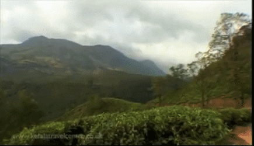

Kochi (also known as Cochin) is a city in southwest India's coastal Kerala state. It has been a port since 1341, when a flood carved out its harbor and opened it to Arab, Chinese and European merchants. Sites reflecting those influences include Fort Kochi, a settlement with tiled colonial bungalows and diverse houses of worship. Cantilevered Chinese fishing nets, typical of Kochi, have been in use for centuries It is the most popular tourist destination for both domestic and international visitors to Kerala and is among the most visited tourist destinations in India.As per Kerala's Tourism Department, the domestic tourist footfall in the city was more than 23 million in 2017.According to the department, aspects like MICE tourism, LuLu Mall, the Wonderla water theme park, and the metro nature of Kochi city were the main aspects for attracting more domestic tourists
Popularly known as the Queen of Arabian Sea, the city also flaunts one of the finest natural harbours of the world and was the centre of the world spice trade for many centuries. Old Kochi (presently called West Kochi), loosely refers to a group of islands which comprise Willingdon Island, Fort Kochi, Mattancherry etc. Kochi represents different things to different people. To many, it is an emerging cosmopolitan city with bustling life in the streets, the cinema halls, the shopping malls, and the skyscrapers; the commercial capital of the state, with a style statement different from the rest of the State - whether in clothes or lifestyle. To some others, Kochi is a place with deep roots in history and its streets exude an old-world charm; a place with beautiful monuments and a variety of linguistic and ethnic communities including Jews, Konkinis, Gujaratis and so on. Yet another group looks at Kochi as a thriving, expanding market, providing opportunities for growth and prosperity to all who knock at her doors. In short, Kochi offers a cocktail of modernity, old-world charm and a global outlook that, at the same time, facilitates continuity and change